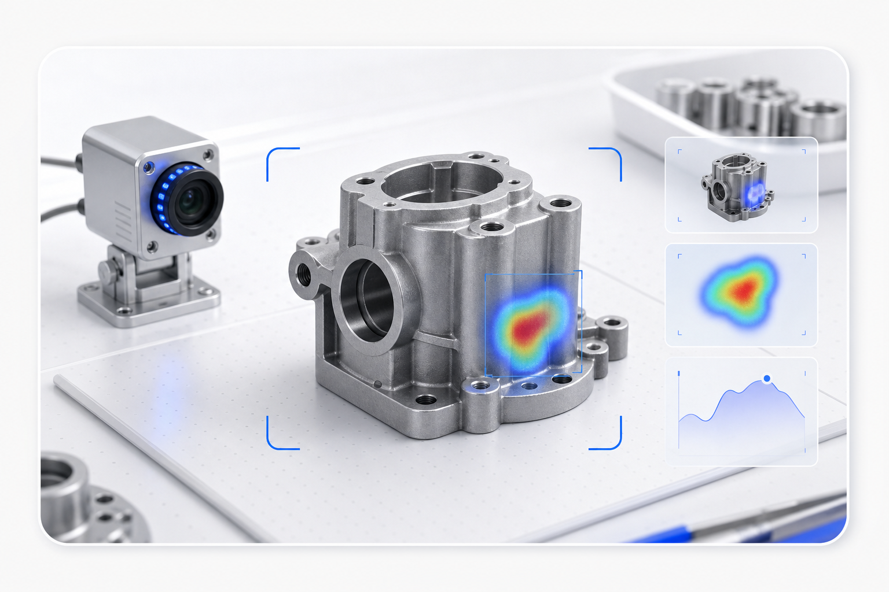
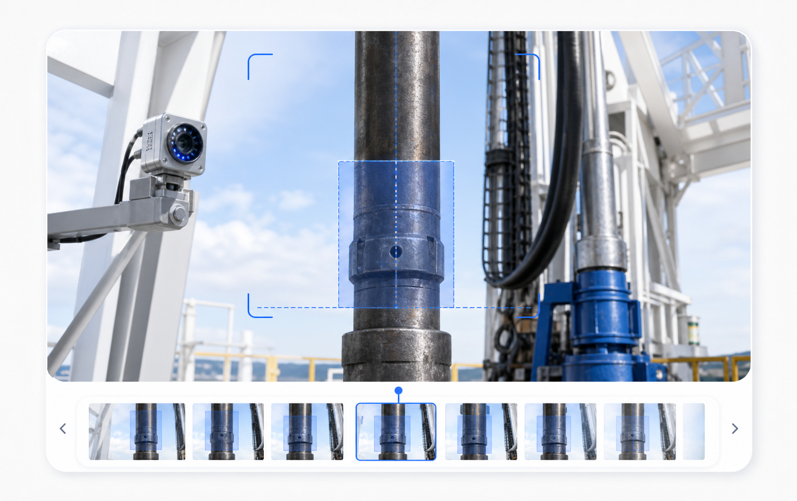
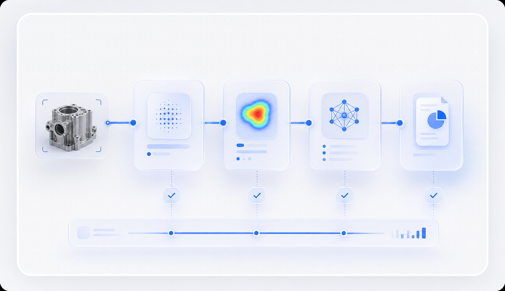
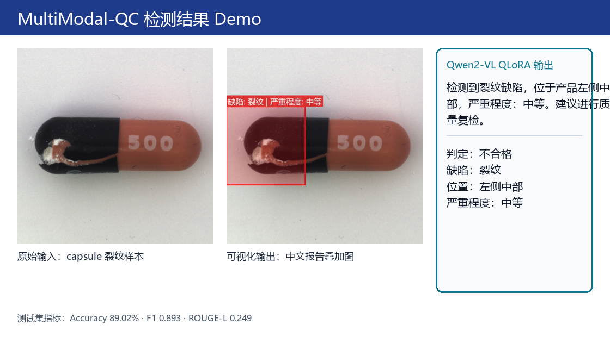
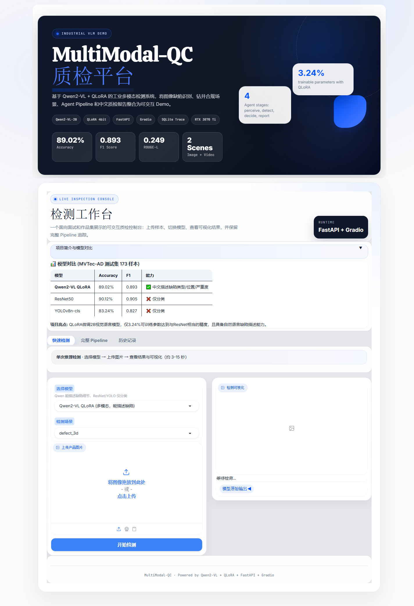
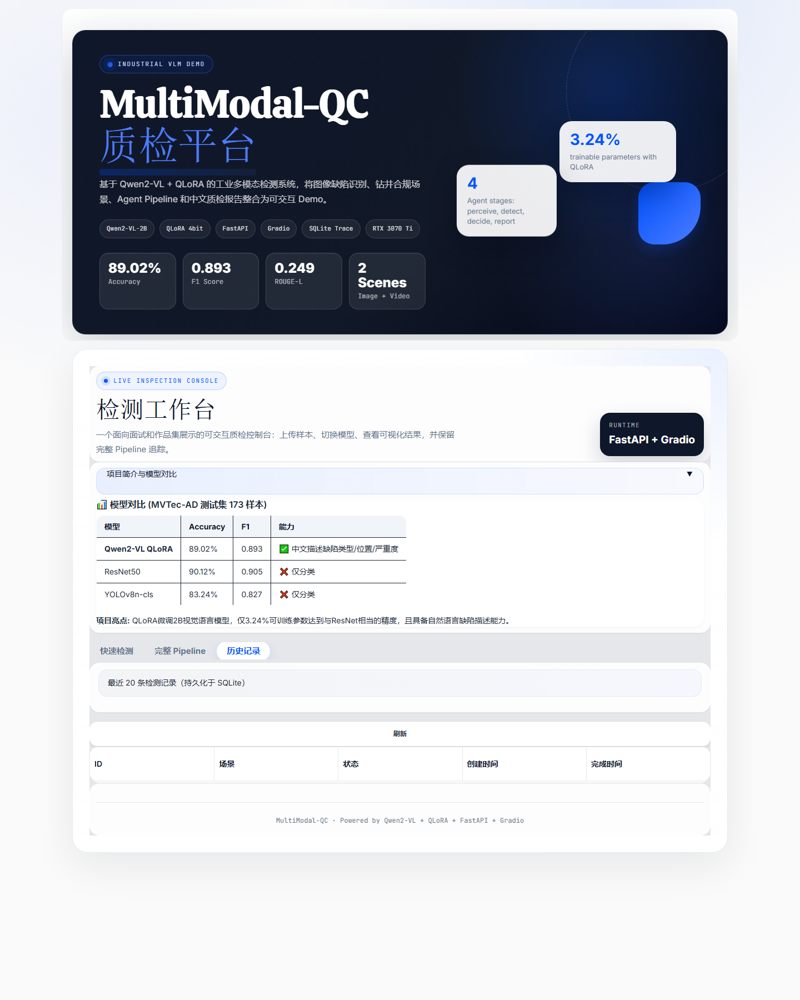

MVTec 缺陷检测
上传产品图像，输出可视化结果与中文质检描述。
基于 Qwen2-VL + QLoRA 的工业质检 Demo，将 MVTec 缺陷识别、钻井合规场景、Agent Pipeline 与可导出历史记录整合为一套面向作品集展示的交互控制台。

MVTec-AD 测试集 173 样本；README 已同步真实指标，当前以 F1=0.893 作为 Qwen2-VL QLoRA 展示结果。
三类展示卡对应当前 Demo 的核心能力：缺陷识别、钻井视频合规、Pipeline 可追踪输出。

上传产品图像，输出可视化结果与中文质检描述。

保留钻井视频检测入口，数据映射局限性在技术报告中说明。

感知、检测、决策、报告四段输出可追踪，适合面试演示。
前端控制台采用轻量 SaaS 风格，突出上传、推理、指标、结果和导出路径，视觉上和实际 Demo 保持一致。

支持产品缺陷图片和钻井合规视频入口，统一交给后端接口处理。
调用微调后的多模态模型输出质检结论与自然语言解释。
缺陷热区、结构化字段和中文报告并列展示，降低理解成本。
检测记录写入本地数据库，也可以导出测试数据用于复盘。
Pipeline 将一次质检拆成感知、检测、决策、报告四个步骤，展示模型结论从哪里来、如何被记录。

四段式 Agent 流程可用于现场讲解和技术报告配图。

将模型判断和图像区域对应起来，让结果更容易被审阅。

保留缺陷类型、严重度、位置、建议等字段，方便导出。
演示不仅有单次检测结果，也包含看板指标和历史记录，适合表现完整产品化闭环。

同步展示 Accuracy、F1、ROUGE-L 和场景覆盖。

SQLite 记录检测输出，便于回看和导出。
统一白底蓝色视觉，和 Demo 首页、控制台保持同一套观感。